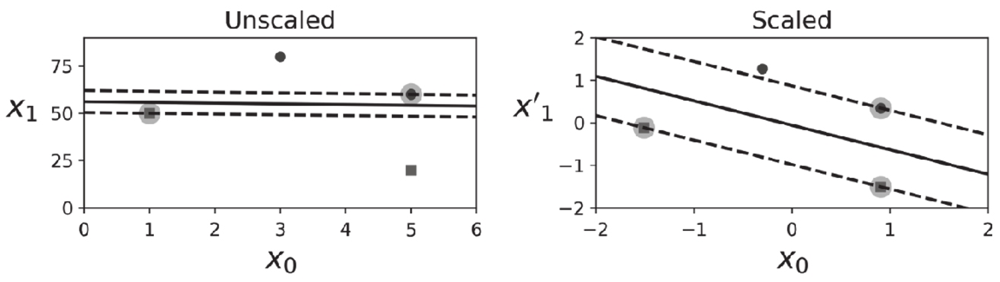

5.1 线性SVM分类¶
可以将SVM分类器视为在类之间拟合可能的最宽的街道（平行的虚线所示）,因此这也叫作大间隔分类.
请注意，在“街道以外”的地方增加更多训练实例不会对决策边界产生影响，也就是说它完全由位于街道边缘的实例所决定（或者称之为”支持”），这些实例被称为支持向量。
[1]:
import numpy as np
from sklearn import datasets
from sklearn.pipeline import Pipeline
from sklearn.preprocessing import StandardScaler
from sklearn.svm import LinearSVC
%matplotlib inline
import matplotlib
import matplotlib.pyplot as plt
Large margin classification
[2]:
from sklearn.svm import SVC
iris = datasets.load_iris()
X = iris['data'][:, (2, 3)]
y = iris['target']
setosa_or_versicolor = (y == 0) | (y == 1)
X = X[setosa_or_versicolor]
y = y[setosa_or_versicolor]
svm_clf = SVC(kernel='linear', C=float('inf'))
svm_clf.fit(X, y)
[2]:
SVC(C=inf, kernel='linear')
[3]:
svm_clf.coef_, svm_clf.intercept_
[3]:
(array([[1.29411744, 0.82352928]]), array([-3.78823471]))
[4]:
x0 = np.linspace(0, 5.5, 200)
pred_1 = 5 * x0 -20
pred_2 = x0 - 1.8
pred_3 = 0.1 * x0 + 0.5
def plot_svc_decision_boundary(svm_clf:SVC, xmin, xmax):
w = svm_clf.coef_[0]
b = svm_clf.intercept_[0]
# 在决策边界满足 w0*x0 + w1*x1 + b = 0
# => x1 = -w0/w1 * x0 - b /w1
x0 = np.linspace(xmin, xmax, 200)
decision_boundary = -w[0]/w[1] * x0 - b/w[1]
# 这是ml-handson的解法
margin = 1/w[1]
gutter_up = decision_boundary + margin
gutter_down = decision_boundary - margin
# 这是scikit-learn的官方解法https://scikit-learn.org/stable/auto_examples/svm/plot_svm_margin.html
# margin = 1 / np.sqrt(np.sum(svm_clf.coef_ ** 2))
# gutter_up = decision_boundary + np.sqrt(1 + (-w[0]/w[1])**2) * margin
# gutter_down = decision_boundary - np.sqrt(1 + (-w[0]/w[1])**2) * margin
svs = svm_clf.support_vectors_
plt.scatter(svs[:, 0], svs[:, 1], s=180, facecolors='#FFAAAA')
plt.plot(x0, decision_boundary, "k-", linewidth=2)
plt.plot(x0, gutter_up, "k--", linewidth=2)
plt.plot(x0, gutter_down, "k--", linewidth=2)
plt.figure(figsize=(12,2.7))
plt.subplot(121)
plt.plot(x0, pred_1, "g--", linewidth=2)
plt.plot(x0, pred_2, "m-", linewidth=2)
plt.plot(x0, pred_3, "r-", linewidth=2)
plt.plot(X[:, 0][y==1], X[:, 1][y==1], "bs", label="Iris-Versicolor")
plt.plot(X[:, 0][y==0], X[:, 1][y==0], "yo", label="Iris-Setosa")
plt.xlabel("Petal length", fontsize=14)
plt.ylabel("Petal width", fontsize=14)
plt.legend(loc="upper left", fontsize=14)
plt.axis([0, 5.5, 0, 2])
plt.subplot(122)
plot_svc_decision_boundary(svm_clf, 0, 5.5)
plt.plot(X[:, 0][y==1], X[:, 1][y==1], "bs")
plt.plot(X[:, 0][y==0], X[:, 1][y==0], "yo")
plt.xlabel("Petal length", fontsize=14)
plt.axis([0, 5.5, 0, 2])
plt.show()
SVM对特征的缩放非常敏感，如图5-2所示，在左图中，垂直刻度比水平刻度大得多，因此可能的最宽的街道接近于水平。在特征缩放（例如使用Scikit-Learn的StandardScaler）后，决策边界看起来好了很多（见右图）.

svm对特征缩放敏感
[5]:
Xs = np.array([[1, 50], [5, 20], [3, 80], [5, 60]]).astype(np.float64)
ys = np.array([0, 0, 1, 1])
svm_clf = SVC(kernel="linear", C=100)
svm_clf.fit(Xs, ys)
plt.figure(figsize=(12,3.2))
plt.subplot(121)
plt.plot(Xs[:, 0][ys==1], Xs[:, 1][ys==1], "bo")
plt.plot(Xs[:, 0][ys==0], Xs[:, 1][ys==0], "ms")
plot_svc_decision_boundary(svm_clf, 0, 6)
plt.xlabel("$x_0$", fontsize=20)
plt.ylabel("$x_1$ ", fontsize=20, rotation=0)
plt.title("Unscaled", fontsize=16)
plt.axis([0, 6, 0, 90])
from sklearn.preprocessing import StandardScaler
scaler = StandardScaler()
X_scaled = scaler.fit_transform(Xs)
svm_clf.fit(X_scaled, ys)
plt.subplot(122)
plt.plot(X_scaled[:, 0][ys==1], X_scaled[:, 1][ys==1], "bo")
plt.plot(X_scaled[:, 0][ys==0], X_scaled[:, 1][ys==0], "ms")
plot_svc_decision_boundary(svm_clf, -2, 2)
plt.xlabel("$x_0$", fontsize=20)
plt.title("Scaled", fontsize=16)
plt.axis([-2, 2, -2, 2])
[5]:
(-2.0, 2.0, -2.0, 2.0)
软间隔分类
硬间隔分类有两个主要问题。首先，它只在数据是线性可分离的时候才有效；其次，它对异常值非常敏感。
[6]:
X_outliers = np.array([[3.4, 1.3], [3.2, 0.8]])
y_outliers = np.array([0, 0])
Xo1 = np.concatenate([X, X_outliers[:1]], axis=0)
yo1 = np.concatenate([y, y_outliers[:1]], axis=0)
Xo2 = np.concatenate([X, X_outliers[1:]], axis=0)
yo2 = np.concatenate([y, y_outliers[1:]], axis=0)
svm_clf2 = SVC(kernel="linear", C=10**9)
svm_clf2.fit(Xo2, yo2)
plt.figure(figsize=(12,2.7))
plt.subplot(121)
plt.plot(Xo1[:, 0][yo1==1], Xo1[:, 1][yo1==1], "bs")
plt.plot(Xo1[:, 0][yo1==0], Xo1[:, 1][yo1==0], "yo")
plt.text(0.3, 1.0, "Impossible!", fontsize=24, color="red")
plt.xlabel("Petal length", fontsize=14)
plt.ylabel("Petal width", fontsize=14)
plt.annotate("Outlier",
xy=(X_outliers[0][0], X_outliers[0][1]),
xytext=(2.5, 1.7),
ha="center",
arrowprops=dict(facecolor='black', shrink=0.1),
fontsize=16,
)
plt.axis([0, 5.5, 0, 2])
plt.subplot(122)
plt.plot(Xo2[:, 0][yo2==1], Xo2[:, 1][yo2==1], "bs")
plt.plot(Xo2[:, 0][yo2==0], Xo2[:, 1][yo2==0], "yo")
plot_svc_decision_boundary(svm_clf2, 0, 5.5)
plt.xlabel("Petal length", fontsize=14)
plt.annotate("Outlier",
xy=(X_outliers[1][0], X_outliers[1][1]),
xytext=(3.2, 0.08),
ha="center",
arrowprops=dict(facecolor='black', shrink=0.1),
fontsize=16,
)
plt.axis([0, 5.5, 0, 2])
plt.show()
要避免这些问题，最好使用更灵活的模型。目标是尽可能在保持街道宽阔和限制间隔违例（即位于街道之上，甚至在错误的一边的实例）之间找到良好的平衡，这就是软间隔分类。
在Scikit-Learn的SVM类中，可以通过超参数C来控制这个平衡：C值越小，则街道越宽，但是间隔违例也就越多。
[7]:
X = iris["data"][:, (2, 3)] # petal length, petal width
y = (iris["target"] == 2).astype(np.float64) # Iris-Virginica
svm_clf = Pipeline([
("scaler", StandardScaler()),
("linear_svc", LinearSVC(C=1, loss="hinge", random_state=42)),
])
svm_clf.fit(X, y)
[7]:
Pipeline(steps=[('scaler', StandardScaler()),
('linear_svc', LinearSVC(C=1, loss='hinge', random_state=42))])
[8]:
svm_clf.predict([[5.5, 1.7]])
[8]:
array([1.])
与Logistic回归分类器不同，SVM分类器不会输出每个类的概率。
如果你的SVM模型过拟合，可以尝试通过降低C来对其进行正则化。
[9]:
scaler = StandardScaler()
svm_clf1 = LinearSVC(C=1, loss="hinge", random_state=42)
svm_clf2 = LinearSVC(C=100, loss="hinge", random_state=42)
scaled_svm_clf1 = Pipeline([
("scaler", scaler),
("linear_svc", svm_clf1),
])
scaled_svm_clf2 = Pipeline([
("scaler", scaler),
("linear_svc", svm_clf2),
])
scaled_svm_clf1.fit(X, y)
scaled_svm_clf2.fit(X, y)
[9]:
Pipeline(steps=[('scaler', StandardScaler()),
('linear_svc',
LinearSVC(C=100, loss='hinge', random_state=42))])
[10]:
# Convert to unscaled parameters
b1 = svm_clf1.decision_function([-scaler.mean_ / scaler.scale_])
b2 = svm_clf2.decision_function([-scaler.mean_ / scaler.scale_])
w1 = svm_clf1.coef_[0] / scaler.scale_
w2 = svm_clf2.coef_[0] / scaler.scale_
svm_clf1.intercept_ = np.array([b1])
svm_clf2.intercept_ = np.array([b2])
svm_clf1.coef_ = np.array([w1])
svm_clf2.coef_ = np.array([w2])
# Find support vectors (LinearSVC does not do this automatically)
t = y * 2 - 1
support_vectors_idx1 = (t * (X.dot(w1) + b1) < 1).ravel()
support_vectors_idx2 = (t * (X.dot(w2) + b2) < 1).ravel()
svm_clf1.support_vectors_ = X[support_vectors_idx1]
svm_clf2.support_vectors_ = X[support_vectors_idx2]
[11]:
plt.figure(figsize=(12,3.2))
plt.subplot(121)
plt.plot(X[:, 0][y==1], X[:, 1][y==1], "g^", label="Iris-Virginica")
plt.plot(X[:, 0][y==0], X[:, 1][y==0], "bs", label="Iris-Versicolor")
plot_svc_decision_boundary(svm_clf1, 4, 6)
plt.xlabel("Petal length", fontsize=14)
plt.ylabel("Petal width", fontsize=14)
plt.legend(loc="upper left", fontsize=14)
plt.title("$C = {}$".format(svm_clf1.C), fontsize=16)
plt.axis([4, 6, 0.8, 2.8])
plt.subplot(122)
plt.plot(X[:, 0][y==1], X[:, 1][y==1], "g^")
plt.plot(X[:, 0][y==0], X[:, 1][y==0], "bs")
plot_svc_decision_boundary(svm_clf2, 4, 6)
plt.xlabel("Petal length", fontsize=14)
plt.title("$C = {}$".format(svm_clf2.C), fontsize=16)
plt.axis([4, 6, 0.8, 2.8])
plt.show()
我们可以将SVC类与线性内核一起使用，而不使用LinearSVC类。创建SVC模型时，我们可以编写SVC（kernel=”linear”，C=1）。或者我们可以将SGDClassifier类与SGDClassifier（loss=”hinge”，alpha=1/（m*C））一起使用。这将使用常规的随机梯度下降（见第4章）来训练线性SVM分类器。它的收敛速度不如LinearSVC类，但是对处理在线分类任务或不适合内存的庞大数据集（核外训练）很有用。
LinearSVC类会对偏置项进行正则化，所以你需要先减去平均值，使训练集居中。如果使用StandardScaler会自动进行这一步。此外，请确保超参数loss设置为”hinge”，因为它不是默认值。最后，为了获得更好的性能，还应该将超参数dual设置为False，除非特征数量比训练实例还多